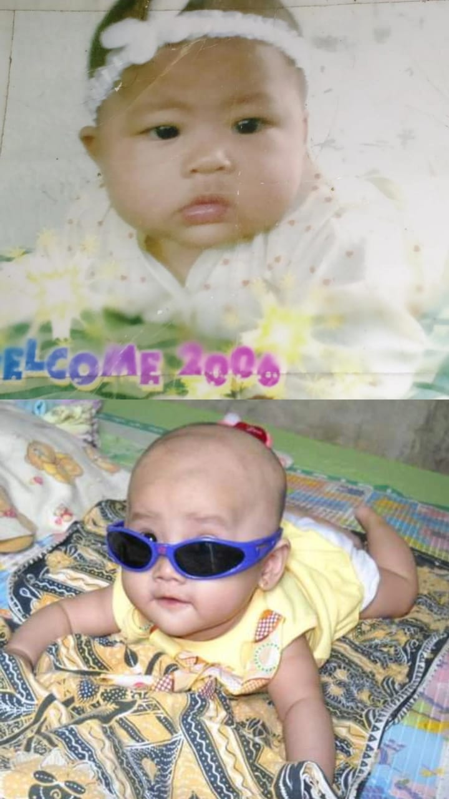
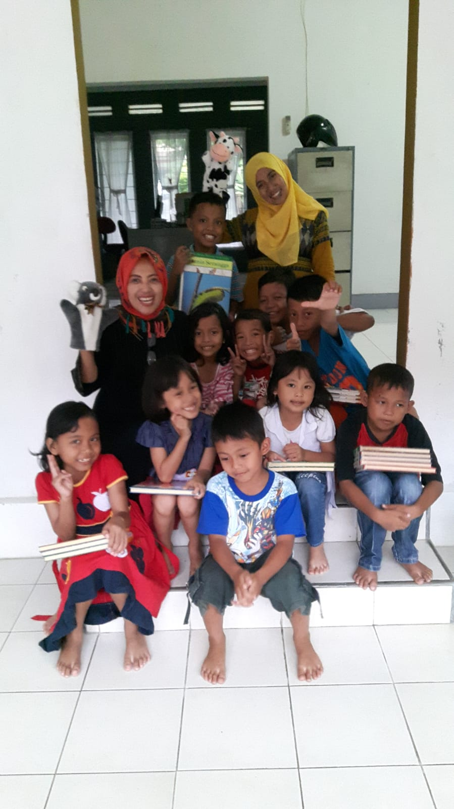
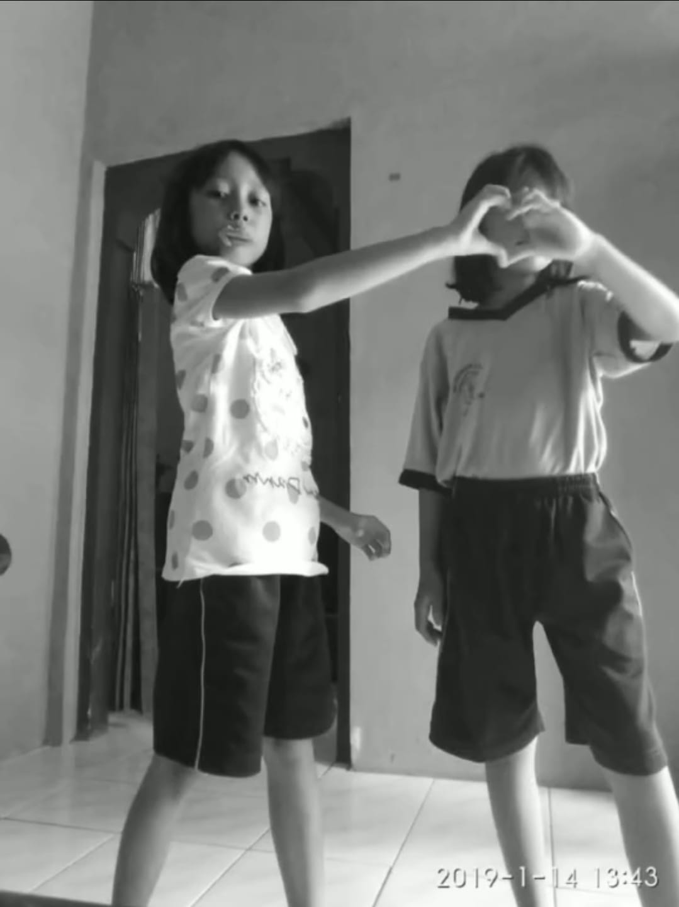
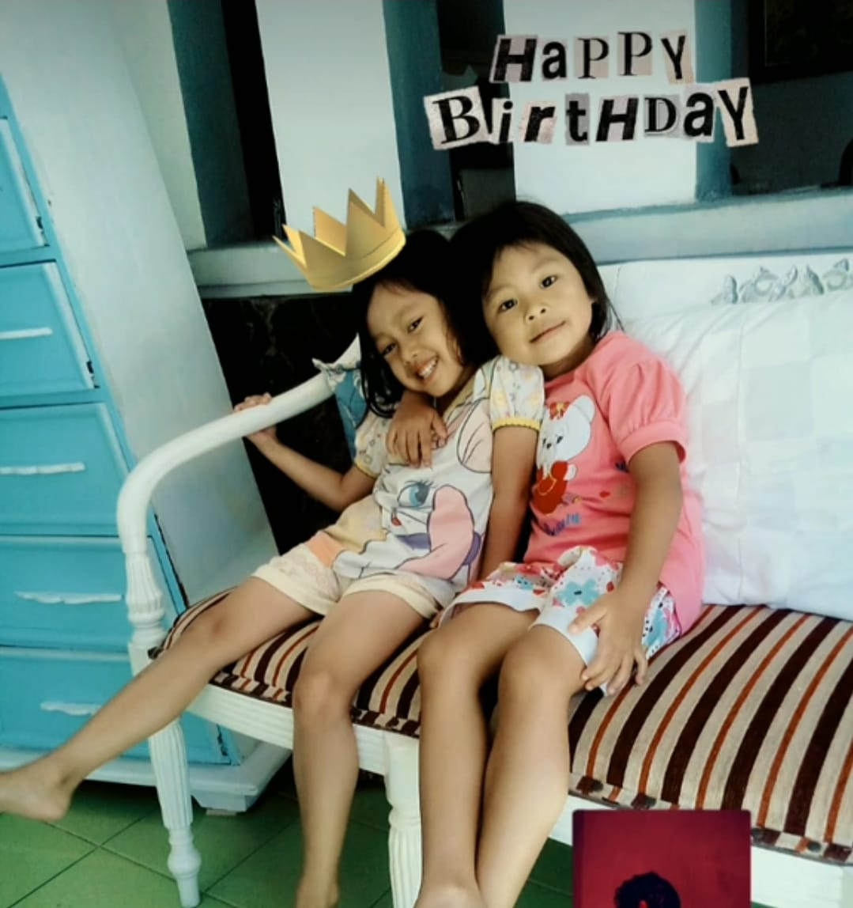
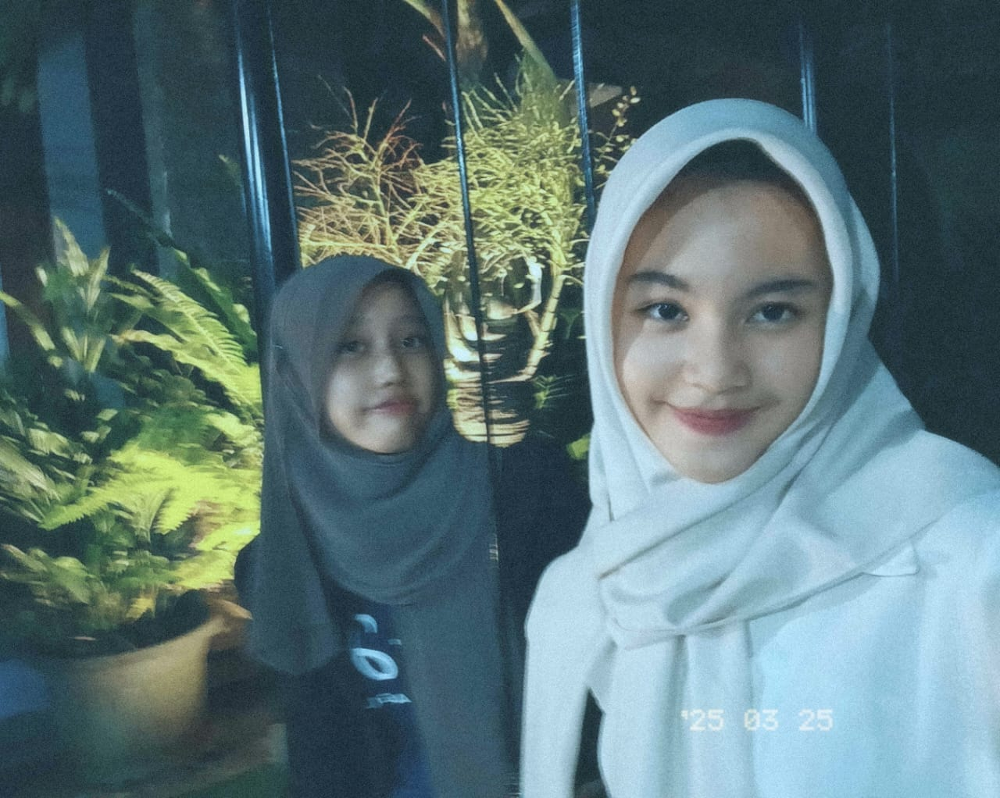
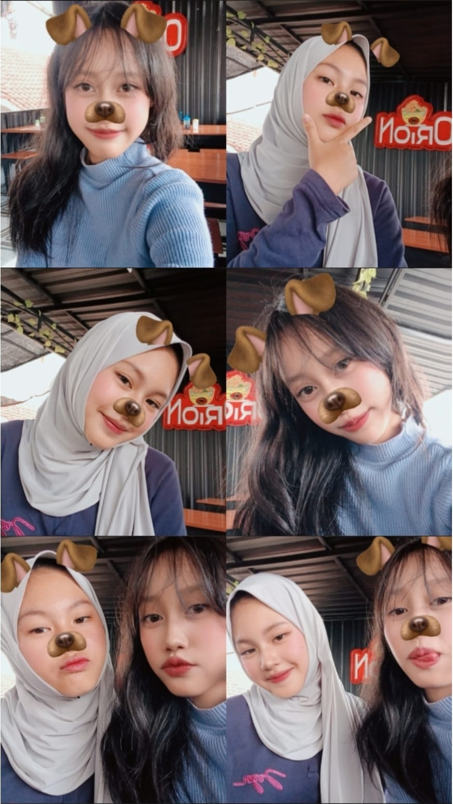
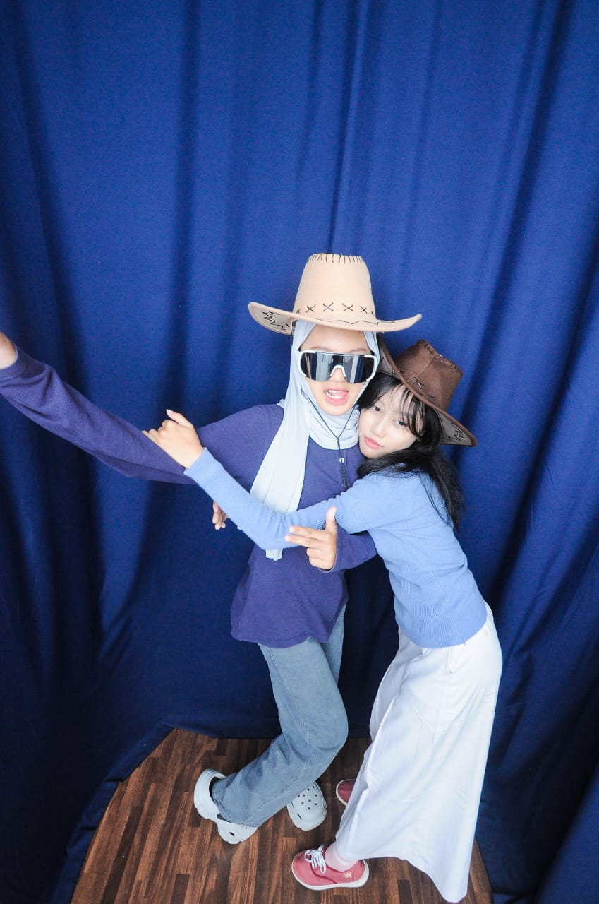

⋆. 𐙚 ̊ Momen-Momen Kecil Kami ✦
‧₊˚🖇️✩ ₊˚🎧⊹♡
Persahabatan kami dimulai saat kami masih bayi — ketika kami bahkan belum tahu apa arti kata “teman.” Kami tumbuh berdampingan, bermain, tertawa, dan menciptakan kenangan yang dulu tak kami sadari akan berarti begitu banyak suatu hari nanti. Kini, di usia lima belas tahun, hidup telah membawa kami ke tempat yang berbeda — dia di Purworejo, dan aku di Yogyakarta. Meskipun jarak memisahkan, setiap tawa, pelukan, dan momen yang pernah kami bagi tetap terasa dekat di hati. Kadang aku merindukan masa-masa itu — ketika semuanya begitu sederhana dan kami saling memiliki tanpa perlu alasan. Namun lebih dari segalanya, aku merasa bersyukur — karena tidak semua orang berkesempatan tumbuh bersama seseorang yang tetap terasa seperti rumah, tidak peduli seberapa jauh jarak memisahkan kami. 🕊️
|  | ✮ ⋆ ˚｡𖦹 ⋆｡°✩
Foto ini diambil oleh orang tua kami pada tahun 2011, ketika kami baru berusia satu tahun. Saat itu, kami masih sangat kecil, polos, dan belum menyadari dunia — terlalu muda untuk memahami arti persahabatan yang sesungguhnya. Dalam foto ini, wajah kami masih memancarkan kebahagiaan murni yang tak tersaring — mata yang cerah, senyum lembut, dan tawa yang tulus dari hati. Siapa sangka dua bayi kecil ini akan tumbuh bersama, membangun persahabatan yang begitu berharga? Seiring berjalannya waktu, kami tumbuh berdampingan — belajar, bermain, tertawa, dan saling mendukung di setiap momen kecil. Kini, lima belas tahun kemudian, hidup telah membawa kami ke kota yang berbeda — aku di Yogyakarta, dan dia di Purworejo — namun ikatan yang dimulai sejak hari-hari pertama kami tetap kuat. Melihat foto ini seperti kembali ke awal segalanya; masa ketika hidup begitu sederhana, dan yang terpenting hanyalah kebersamaan. Persahabatan kami dimulai tanpa sengaja, namun telah tumbuh dengan indah, tenang, dan abadi sejak saat itu. 🌿 |
 |
୧ ‧₊˚ 🍮 ⋅ ☆
Foto ini diambil ketika kami baru saja memulai taman kanak-kanak. Saat itu, kami masih sangat kecil, mengenakan seragam yang sedikit kebesaran, dan tersenyum dengan kebahagiaan yang paling murni. Foto ini diambil oleh Ibu Rani, tetangga kami di Purworejo, ketika aku masih tinggal di sana. Melihatnya sekarang terasa begitu manis — betapa imut dan menggemaskannya kami, berdiri berdampingan tanpa menyadari bahwa momen kecil ini suatu hari akan menjadi kenangan yang begitu berharga. Di balik senyum polos itu, tersimpan kehangatan masa kanak-kanak yang tak akan pernah tergantikan oleh waktu. 🩵 |
|  | 𓂃˖˳·˖ ִֶָ ⋆🌷͙⋆ ִֶָ˖·˳˖𓂃 ִֶָ
Foto ini diambil ketika Ibu Rani mengadakan pelajaran membaca dan bercerita untuk semua anak-anak di lingkungan kami. Saat itu, suasananya sangat menyenangkan — kami datang dengan penuh semangat, bukan hanya untuk belajar, tetapi juga karena tahu akan ada camilan menunggu setelahnya. Semua orang tertawa, mendengarkan cerita, dan berusaha duduk sedekat mungkin di depan. Kini, ketika melihat kembali foto ini, aku menyadari betapa berharganya momen-momen itu. Dulu, kami hanya ingin bermain dan bersama-sama, tanpa tahu bahwa suatu hari nanti kami semua akan sibuk menapaki jalan masing-masing dalam hidup. Namun, kebahagiaan sederhana itu tetap hangat di hatiku, seolah baru terjadi kemarin. ☀️ |
|  | ˖ ݁𖥔 ݁˖ 𐙚 ˖ ݁𖥔 ݁˖ Foto ini diambil oleh aku dan Yayak menggunakan ponsel Kakek. A da begitu banyak foto — sebagian besar lucu atau buram, tapi setiap foto penuh dengan kenangan manis. Saat itu, kami masih bersekolah di SD Negeri Brengkelan, dan setelah pulang sekolah, kami selalu menyempatkan diri untuk bermain sebentar sebelum pulang — tertawa, bercanda, atau sekadar duduk bersama tanpa alasan apa pun.Melihat foto-foto ini sekarang terasa seperti membuka jendela kecil ke masa lalu — masa ketika hal-hal sederhana bisa membuat kami begitu bahagia. |
|  | ୭ 🧷 ✧ ˚. ᵎᵎ 🎀
Foto ini juga diambil di rumah Ibu Rani, saat kami sedang bermain bersama. Melihatnya sekarang terasa begitu lucu sekaligus hangat — senyum dan tawa kami begitu tulus, tanpa sedikit pun berpura-pura. Hanya dua anak kecil yang tak tahu apa-apa selain kebahagiaan murni, menikmati momen tanpa rasa khawatir.Foto ini menangkap kepolosan itu dengan sangat indah — masa ketika semuanya terasa ringan dan sederhana. Kadang, aku berharap bisa kembali ke saat itu, di mana kebahagiaan sesederhana sebuah tawa dan teman yang ada di sisiku. |
{kind=link}
{kind=link}
{kind=link}
{kind=link}
Ada juga banyak foto yang kami ambil saat mulai tumbuh besar. Tapi, berbeda dari dulu, jumlahnya tidak sebanyak sebelumnya — mungkin karena kami tidak lagi bertemu setiap hari seperti saat masih kecil, tertawa dan bermain tanpa rasa khawatir. Kini, waktu berjalan lebih cepat, dan jarak diam-diam membentang di antara kami. Aku tinggal di Yogyakarta, dan dia di Purworejo — dua kota yang tidak terlalu jauh, namun cukup untuk membuat setiap pertemuan terasa berharga. Kadang, kami hanya sempat berbicara lewat pesan singkat atau panggilan video di sela-sela kesibukan sekolah. Namun, meskipun foto-fotonya lebih sedikit, masing-masing memiliki makna yang lebih dalam — penuh tawa yang jarang kami bagi, kenangan yang kami simpan dekat di hati, dan ikatan yang tak pudar oleh waktu. Foto-foto ini bukan sekadar gambar; mereka adalah pengingat lembut bahwa persahabatan kami masih hidup, tumbuh, dan bersinar melalui setiap babak kehidupan. Gulir ke bawah untuk melihat momen-momen yang menceritakan kisah kami saat kami terus bertumbuh.
|
˖ ܁𖥔 ܁˖ 𐙚 ˖ ܁𖥔 ܁˖
Foto ini diambil setelah kami lulus dari sekolah dasar, saat menunggu untuk memulai perjalanan baru di SMP yang berbeda. Rasanya campur aduk — aneh sekaligus menyenangkan — karena untuk pertama kalinya kami tidak bisa bertemu setiap hari seperti sebelumnya. Di sinilah persahabatan jarak jauh kami dimulai, meskipun jaraknya tidak terlalu jauh, tapi rasanya ada yang berubah. Dulu, kami masih selalu diantar dan dijemput orang tua ke mana pun, uang saku masih terbatas, dan bahkan camilan paling sederhana bisa membuat kami tertawa berjam-jam. Itu adalah fase yang begitu polos dan hangat — masa transisi dari masa kanak-kanak ke awal remaja, di mana segalanya berubah, kecuali persahabatan kami yang tetap nyata dan kuat. |
|  | ˚˖𓍢ִ໋🍃✧˚.💚⋆ Foto ini diambil saat kami sudah duduk di kelas sembilan, hanya beberapa langkah lagi menuju kelulusan. Waktu itu sedang bulan Ramadan, dan kami memiliki ide kecil untuk berbuka puasa bersama menggunakan uang yang kami tabung setelah lama tidak bertemu. Kini, mengingatnya terasa begitu manis — betapa bersemangatnya kami hanya untuk menghabiskan hari sederhana, makan, dan tertawa bersama selama hari raya. Dalam foto ini, kami pergi ke tempat itu dengan motor milik Yayak, karena aku masih belum bisa mengendarai motor sendiri. Mungkin terlihat sederhana, tapi kenangan seperti inilah yang tetap hangat di hatiku — momen-momen kecil yang mengingatkan betapa indahnya kebersamaan, bahkan tanpa sesuatu yang besar atau mewah. |
|  | ✩₊˚.⋆☾⋆⁺₊✧
Foto ini diambil saat kami sudah berada di kelas 10 di SMK. Kali ini, kami pergi menggunakan motorku — rasanya lucu sekaligus sedikit bangga, karena dulu aku selalu menjadi penumpang Yayak, dan sekarang giliran aku yang mengendarai. Hari itu, kami makan seblak di tempat favorit kami, berkeliling Purworejo sambil tertawa dan mengobrol tentang segala hal, dan mengakhiri hari dengan berfoto di photobox bersama. Sungguh menggemaskan mengingatnya — bagaimana kami telah tumbuh dewasa, namun masih menemukan kebahagiaan dalam hal-hal sederhana yang sama. Dari dua anak kecil yang dulu bermain setelah pulang sekolah, menjadi dua remaja yang kini menjelajahi kota bersama — tumbuh dewasa terasa lebih hangat ketika bersama seseorang yang telah ada sejak awal semuanya dimulai. |
|  | ﮩـﮩﮩ٨ـ♡ﮩ٨ـﮩﮩ٨ـ
Ini salah satu foto yang kami ambil hari itu — lucu sekali, kan? Kami bahkan punya satu yang sedang berpelukan! Sebenarnya, ada sekitar 115 foto secara keseluruhan, tapi sebagian besar sudah aku unggah ke Google Drive. (https://drive.google.com/drive/folders/1-kzGBmRTMLdyI-u1K5Vulg6UPYW1-Dcd). Sangat lucu dan manis melihat kembali foto-foto itu, karena setiap gambar menyimpan cerita kecilnya sendiri. Hari itu penuh dengan tawa, momen konyol, dan sedikit rasa malu yang entah bagaimana membuat semuanya terasa lebih istimewa. Lain kali, ketika liburan tiba dan aku sudah cukup umur untuk mengendarai motorku ke kota lain, mari kita jelajahi Jogja bersama! Kamu bisa menginap di rumahku, kita akan jalan-jalan, makan camilan favorit, mengambil lebih banyak foto, dan menciptakan kenangan baru untuk menambah cerita kita. |
{kind=link}
{kind=link}
{kind=link}